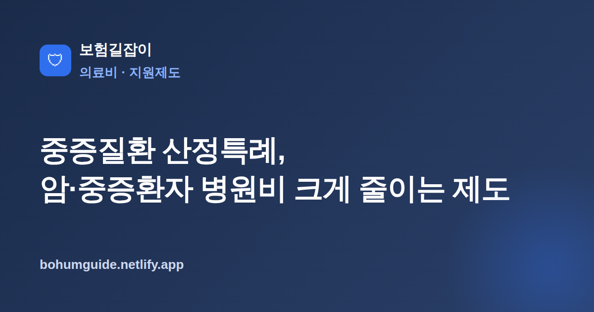

중증질환 산정특례, 암·중증환자 병원비 크게 줄이는 제도 총정리
암·뇌혈관·심장질환, 희귀·중증난치질환처럼 치료가 길고 비용 부담이 큰 병을 진단받았다면, 건강보험 본인부담을 크게 낮춰 주는 산정특례 제도를 먼저 챙겨야 합니다. 제대로 등록하면 같은 진료라도 병원비 부담이 눈에 띄게 달라집니다.

✍️ 편집자 참고: 본 글은 초안입니다. 대상 질환·본인부담률·등록 기간 등은 제도 개정으로 바뀌니 게시 전 국민건강보험공단 최신 기준으로 검수·수정해 주세요.
큰 병을 진단받으면 치료 자체도 걱정이지만 병원비가 얼마나 나올지도 큰 부담입니다. 이때 가장 먼저 확인해야 할 것이 중증질환 산정특례입니다. 실손보험이나 암보험을 챙기기 전에, 건강보험 안에서 본인부담을 낮춰 주는 이 제도를 먼저 등록해 두는 것이 순서입니다.
산정특례란 무엇인가
산정특례는 치료비 부담이 크고 장기 치료가 필요한 중증질환자에 대해 건강보험 급여 진료비의 본인부담률을 크게 낮춰 주는 제도입니다. 보통 건강보험 급여 진료는 외래·입원 구분에 따라 본인이 일정 비율을 부담하지만, 산정특례 대상으로 등록되면 해당 질환 관련 진료에 대해 일반적인 경우보다 훨씬 낮은 본인부담률이 적용됩니다. 치료가 몇 년에 걸쳐 이어지는 병일수록 누적 절감 효과가 큽니다.
다만 산정특례가 낮춰 주는 것은 어디까지나 건강보험 급여 항목의 본인부담입니다. 비급여 진료나 선택 항목, 상급병실 차액 등은 산정특례로 줄어들지 않으므로, 이 부분은 실손보험 등으로 따로 대비하는 것이 필요합니다.
대상 질환과 경감 개요
산정특례 대상은 크게 암, 뇌혈관·심장질환, 희귀·중증난치질환, 중증화상 등으로 나뉩니다. 질환군마다 적용 범위와 기간, 본인부담률이 다르게 정해져 있어, 자신이 어떤 유형에 해당하는지 확인하는 것이 먼저입니다.
| 질환군 | 개요 |
|---|---|
| 암 | 암 확진 시 등록, 관련 진료 본인부담률이 일반보다 크게 낮아짐 |
| 뇌혈관·심장질환 | 주로 수술 등 특정 치료를 받은 경우 일정 기간 적용 |
| 희귀·중증난치질환 | 지정된 질환에 해당하면 장기적으로 경감 적용 |
| 중증화상 | 중증화상 진단·치료 시 일정 기간 본인부담 경감 |
핵심 정리
같은 '중증질환'이라도 질환군에 따라 본인부담률과 적용기간이 다릅니다. 구체 비율과 기간은 제도 개정으로 바뀌므로, 특정 숫자를 외우기보다 진단 시점에 국민건강보험공단에서 내 질환의 최신 기준을 확인하는 것이 안전합니다.
등록 방법: 확진 후 신청해야 적용된다
산정특례는 자동으로 적용되지 않습니다. 진단이 확진된 뒤 산정특례 등록을 신청해야 그때부터 경감이 적용됩니다. 보통 담당 의사가 산정특례 등록 신청서(등록 확인)를 작성해 주면, 병원 또는 본인이 국민건강보험공단에 신청하는 방식입니다.
재등록 개념
산정특례는 질환군에 따라 적용 기간이 정해져 있고, 기간이 끝나면 조건에 따라 재등록이 필요할 수 있습니다. 예컨대 치료가 계속되는 경우 기간 만료 전에 재등록 절차를 밟아야 경감이 끊기지 않습니다. 등록·재등록 기간과 요건은 제도 개정으로 바뀌므로, 만료 시점이 다가오면 공단에 미리 확인하는 것이 좋습니다.
본인부담상한제·재난적의료비·실손보험과의 관계
산정특례는 단독으로 끝나는 제도가 아니라 다른 제도와 맞물려 병원비 부담을 줄여 줍니다. 순서와 중복 여부만 이해하면 놓치는 부분 없이 챙길 수 있습니다.
- 산정특례로 급여 본인부담이 먼저 줄어든 뒤, 그래도 남은 급여 본인부담이 연간 상한을 넘으면 본인부담상한제와 실손보험 활용법으로 초과분을 돌려받을 수 있음
- 소득 대비 의료비 부담이 과도하게 큰 경우 재난적의료비 지원제도로 추가 지원을 검토
- 산정특례·상한제로 본인이 실제 부담하지 않게 된 금액은 실손보험 보상에서 조정(차감)될 수 있음
- 비급여·선택 항목은 산정특례로 줄지 않으므로 암보험 핵심 구조로 보완 여부를 확인
즉 산정특례와 본인부담상한제는 급여 본인부담을 낮추거나 돌려주고, 재난적의료비는 그래도 부담이 큰 경우를 보완하며, 실손보험은 실제 부담한 금액을 기준으로 보상합니다. 여러 제도가 겹치는 부분은 서로 차감·조정되므로, 이미 받은 지원이 있는지 확인하며 청구 순서를 정리하는 것이 중요합니다.
실전 체크 & 요약
중증질환을 진단받았다면 치료 초기에 산정특례 등록부터 챙기는 것이 병원비를 줄이는 첫걸음입니다. 등록 시점부터 경감이 적용되므로 미루지 말고 담당 의사·병원과 함께 신청 절차를 확인하세요. 적용 기간이 있는 질환은 만료 전 재등록을 잊지 말고, 급여 본인부담이 컸던 해에는 본인부담상한제 환급 대상 여부도 함께 조회하는 것이 좋습니다. 본인부담률·기간 등 구체 수치는 제도 개정으로 바뀌므로, 언제나 국민건강보험공단의 그해 최신 기준을 기준으로 확인하는 습관이 필요합니다.
본 정보는 일반적인 안내이며, 대상 질환·본인부담률·등록 절차는 국민건강보험공단 등 관계기관을 통해 반드시 확인하시기 바랍니다.